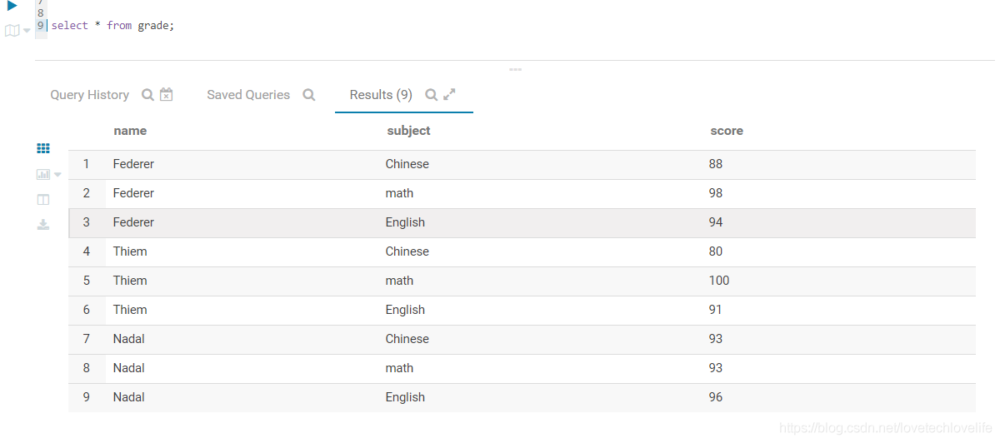
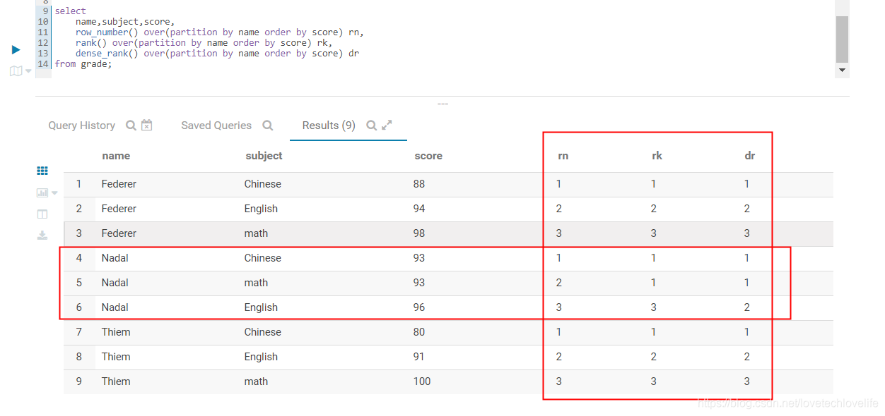
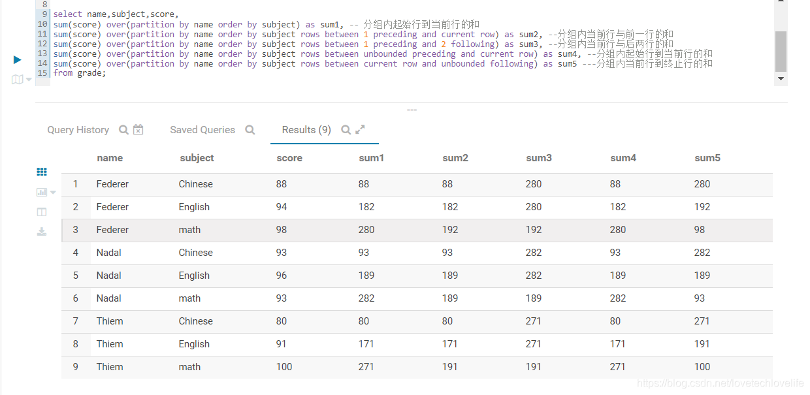
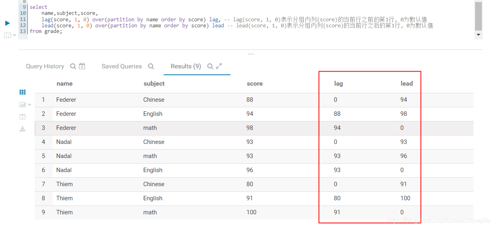
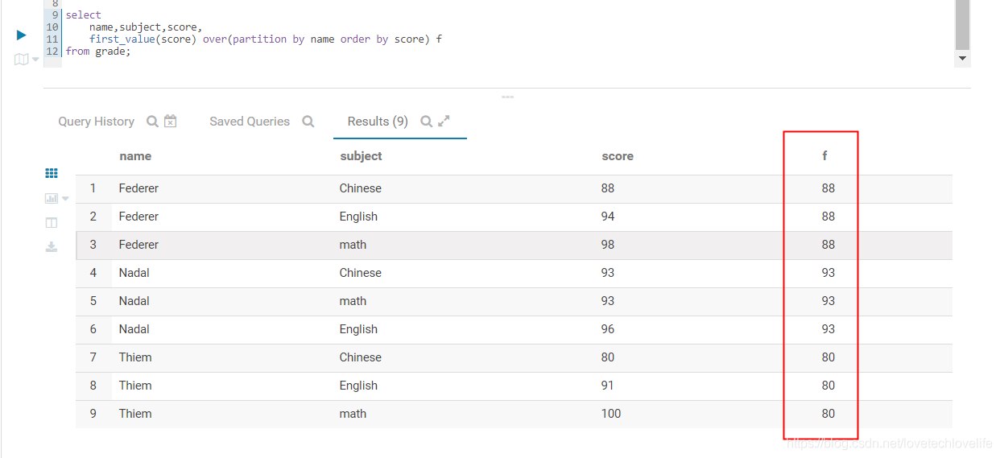
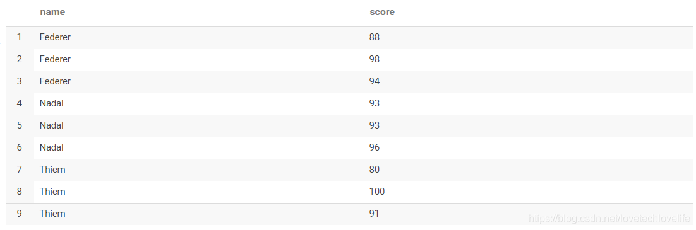
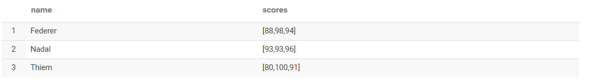

Hive SQL和Spark SQL常用函数。
窗口分析函数
函数中用到的表数据如下图：

1. 分析函数
- row_number()
- rank()
- dense_rank()
这3个函数通常用在组内排序中，但实现的效果却不相同，用法如下：
1 | select |
排序之后编号对比， 如下图：

2. 聚合函数
- count()组内计数
- sum()组内求和
- avg()组内求平均值
- max()&min()组内求最大最小值
下面SQL以sum函数为例展示聚合函数的用法，其他函数的用法类似。
1 | select |
计算结果如下图：

3. 窗口函数
- lag(col, n, default) 表示分组内列(col)的当前行之前的第n行, default为默认值
- lead(col, n, default) 表示分组内列(col)的当前行之后的第n行, default为默认值
用法如下：
1 | select |
结果如下图：

- first_value(col) 组内排序第一个值
- last_value(col) 组内排序最后一个值
用法如下：
1 | select |

行列转换
1. 行转列
原始数据如下图：

转换SQL：
1 | select name, collect_list(score) from grade group by name; |
结果：

2. 列转行
原始数据：
转换SQL：
1 | select name, score from grade lateral view explode (scores) tmp as score |
结果：
JSON处理
1. JSON对象
JSON对象的处理可以用get_json_object()函数或json_tuple()函数。
字段field的值是一个JSONObject：{“status”:0,”version”:”v1.0”}
- get_json_object()
1
2
3
4select
get_json_object(field, "$.status"),
get_json_object(field, "$.version")
from db.table; - json_tuple()
如果需要获取多个key的值，建议用json_tuple函数，性能优于get_json_object()。1
2
3
4select
json.status, json.version
from qjdods.cif_credit_report t
lateral view json_tuple(report_value, 'status', 'version') json as status, version limit 1;2. JSON数组
1. Hive SQL实现
Hive中的处理思路：
- 把JSON对象之间的逗号(，)替换成特殊字符，比如^*，因为之后要以这个特殊字符串来切分
- 替换掉中括号([])，为空
- 以步骤1中的特殊字符串切分处理后的JSON数组
- 结合 lateral view explode()函数，使得JSON数组转成多行JSON对象
1 | select |
3. Spark SQL实现
使用Hive SQL处理JSON数组有一个弊端，如果JSON数组里面有嵌套数组的时候，单纯的替换掉中括号得出的结果就是错误的。而Spark SQL提供了一个内建函数substring_index(str: Column, delim: String, count: Int)，这个函数可以从指定的索引位置，并指定指定分隔符来切分字符串，这样就可以实现只替换JSON数组中的首尾中括号。当然，在Hive SQL也可以自己写一个UDF来实现这个功能。
实现代码如下：
1 | //Json数组行转列 |
时间处理
- 获取当前时间，并格式化(yyyy-MM-dd HH:mm:ss)
1
from_unixtime(unix_timestamp(), 'yyyy-MM-dd HH:mm:ss')